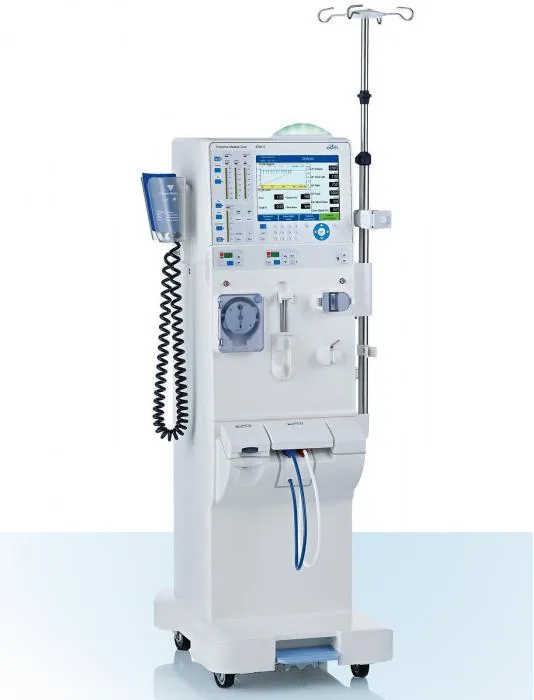
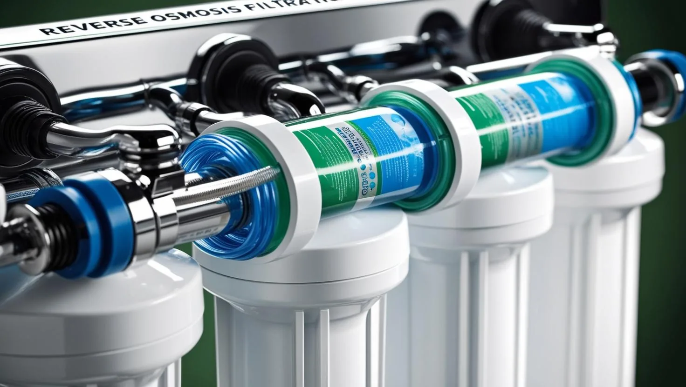

Machine preventive maintenance
Scheduled PM on hemodialysis machines to manufacturer intervals, with calibration checks and signed service records.
Service 02 Biomedical division
Our Biomedical Division keeps dialysis equipment performing reliably and in compliance with regulatory standards.
Machines, RO systems, and distribution loops are serviced on a documented schedule — with the logs, water quality records, and disinfection evidence a surveyor expects to see.
Survey readiness support →Capabilities
Contracted programs or single interventions. Every visit produces documentation filed to your equipment records.


Scheduled PM on hemodialysis machines to manufacturer intervals, with calibration checks and signed service records.
Diagnosis and corrective repair of machine faults and alarm conditions, with root-cause notes and return-to-service verification.
Pretreatment, softeners, carbon tanks, and distribution loop upkeep — the full path from feed water to the machine.
RO performance verification, rejection-rate review, pump and sensor service for both fixed and portable units.
Membrane change-out, chemical and heat disinfection of RO and loop, with residual testing documented before release.
Routine chemical, microbial, and endotoxin sampling schedules with trended results and action thresholds.
Service practice, sampling, and record-keeping aligned to AAMI water and equipment standards.
Equipment installation, commissioning, and start-up support for new stations, relocations, and clinic openings.
Technical standard
Water quality, disinfection, and equipment maintenance are performed and documented against AAMI standards — the same reference your surveyor will use.
Equipment & systems supported
Manufacturer coverage
Send your equipment inventory, PM schedule, or water quality concern. We review it and respond with a service plan.